Contents
% Engine Lab clear all close all
Reading in Data
Reading in entire data set
Header=22; RPM600 = importdata('600RPM.lvm' ,'\t',Header); RPM700 = importdata('700RPM.lvm' ,'\t',Header); RPM800 = importdata('800RPM.lvm' ,'\t',Header); RPM900 = importdata('900RPM.lvm' ,'\t',Header); RPM1000 = importdata('1000RPM.lvm','\t',Header); RPM1100 = importdata('1100RPM.lvm','\t',Header); % Separating entire data sets into vectors of Time and Voltage RPM600_Volt = RPM600.data(:,2); % Optical Sensor (V) RPM700_Volt = RPM700.data(:,2); RPM800_Volt = RPM800.data(:,2); RPM900_Volt = RPM900.data(:,2); RPM1000_Volt = RPM1000.data(:,2); RPM1100_Volt = RPM1100.data(:,2); RPM600_Pres = RPM600.data(:,3); % p(V) RPM700_Pres = RPM700.data(:,3); RPM800_Pres = RPM800.data(:,3); RPM900_Pres = RPM900.data(:,3); RPM1000_Pres = RPM1000.data(:,3); RPM1100_Pres = RPM1100.data(:,3);
Contants for the Engine
vp_conv = 0.0104; % V/psi CR = 8.5; % Compression Ratio Rod_L = .116; % Meters Stroke = .067; % Meters Vol_Disp = 624/(1e6); % Cubic Meters Vol_Clea = Vol_Disp/(CR-1); % Cubic Meters R = 2*Rod_L/Stroke;
600 RPM
Power_600 = 10.3*745.7; % Watts dm_600 = (13640-13589)/1000; % kilograms RPM600P = (RPM600_Pres./vp_conv).*6894; % Pa RPM600t = zeros(1,length(RPM600P)); for i = 1:length(RPM600t) RPM600t(i) = RPM600t(i) + (i-1)*.0004; end RPM600t = RPM600t'; sw = 0; j = 1; thresh = 1; n = length(RPM600_Volt); for i = 1:n if RPM600_Volt(i) - thresh > 0 && sw == 0 sw = 1; pos_600(j) = i; j = j + 1; elseif RPM600_Volt(i) - thresh < 0 && sw == 1 sw = 0; end end theta_600 = zeros(length(RPM600_Volt)-5,1); for j = 1:length(pos_600)-1 for i = pos_600(j):pos_600(j+1) theta_600(i) = 2*pi*(1 - ((RPM600t(pos_600(j+1)) - RPM600t(i))/(RPM600t(pos_600(j+1)) - RPM600t(pos_600(j))))); end end Volume_600 = Vol_Clea.*(1+(.5.*(CR-1)).*(R+1-cos(theta_600)-sqrt(R.^2-(sin(theta_600)).^2))); % Figure for Part 1a f1 = figure(1); subplot(3,1,3) hold on yyaxis left plot(RPM600t(pos_600(1):pos_600(11)),RPM600P(pos_600(1):pos_600(11))) ylabel('Pressure (Pa)') yyaxis right ylabel('Output Voltage (V)') plot(RPM600t(pos_600(1):pos_600(11)),RPM600_Volt(pos_600(1):pos_600(11))) subplot(3,1,1) hold on yyaxis left plot(RPM600t(pos_600(1):pos_600(11)),theta_600(pos_600(1):pos_600(11))) ylabel('Angle (Radians)') yyaxis right ylabel('Output Voltage (V)') plot(RPM600t(pos_600(1):pos_600(11)),RPM600_Volt(pos_600(1):pos_600(11))) subplot(3,1,2) hold on yyaxis left plot(RPM600t(pos_600(1):pos_600(11)),Volume_600(pos_600(1):pos_600(11))) ylabel('Volume (m^3)') yyaxis right ylabel('Output Voltage (V)') plot(RPM600t(pos_600(1):pos_600(11)),RPM600_Volt(pos_600(1):pos_600(11))) xlabel('Time (Sec)') % Figure for part 1b f2=figure(2); plot(Volume_600(pos_600(3):pos_600(5)),RPM600P(pos_600(3):pos_600(5))) xlabel('Cylinder Volume (m^3)') ylabel('Cylinder Pressure (Pa)') % Figure for part 1c f3=figure(3); plot(Volume_600(pos_600(3):pos_600(end)),RPM600P(pos_600(3):pos_600(end))) xlabel('Cylinder Volume (m^3)') ylabel('Cylinder Pressure (Pa)') % Part 2 j=1; W = zeros(10,1); P = zeros(10,1); for i = 1:2:19 W(j) = trapz(Volume_600(pos_600(i):pos_600(i+2)),RPM600P(pos_600(i):pos_600(i+2)))/2; P(j) = W(j)/(RPM600t(pos_600(i+2))-RPM600t(pos_600(i))); j=j+1; end Avg_W_600 = mean(W); Avg_P_600 = mean(P); MFR1 = dm_600/(60/RPM600t(end)); MFR = MFR1/(length(pos_600)/2); MFR2_600 = dm_600/60; MFR_Cyl_600 = MFR/2; % Flow rate of one cylinder per cycle KW_600 = Avg_P_600/1000; % Power in KW Torque_600 = Avg_W_600/3.16; % Engine Torque Brake_Power_600 = 2*pi*(600/60)*Torque_600; Brake_Eff_600 = Brake_Power_600/(MFR2_600*(44e6)); % Brake thermal eff Conv_Eff_600 = Brake_Power_600/(Avg_P_600*2); % Mechanical conversion eff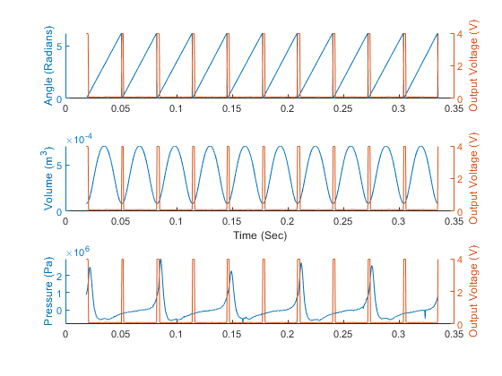 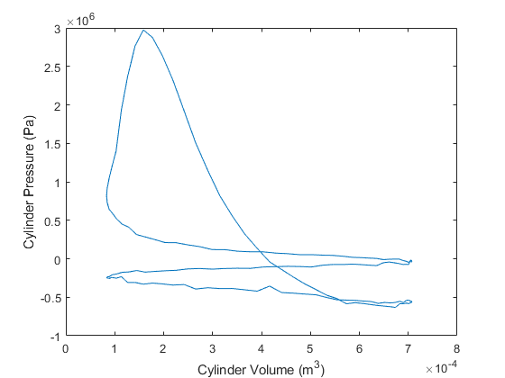 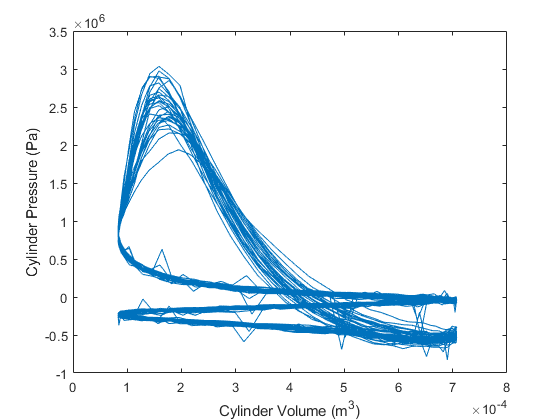
700 RPM
Power_700 = 12.8*745.7; % Watts dm_700 = (13729-13666)/1000; % kilograms RPM700P = (RPM700_Pres./vp_conv).*6894; % Pa RPM700t = zeros(1,length(RPM700P)); for i = 1:length(RPM700t) RPM700t(i) = RPM700t(i) + (i-1)*.0002; end RPM700t = RPM700t'; sw = 0; j = 1; thresh = 1; n = length(RPM700_Volt); for i = 1:n if RPM700_Volt(i) - thresh > 0 && sw == 0 sw = 1; pos_700(j) = i; j = j + 1; elseif RPM700_Volt(i) - thresh < 0 && sw == 1 sw = 0; end end theta_700 = zeros(length(RPM700_Volt)-5,1); for j = 1:length(pos_700)-1 for i = pos_700(j):pos_700(j+1) theta_700(i) = 2*pi*(1 - ((RPM700t(pos_700(j+1)) - RPM700t(i))/(RPM700t(pos_700(j+1)) - RPM700t(pos_700(j))))); end end Volume_700 = Vol_Clea.*(1+(.5.*(CR-1)).*(R+1-cos(theta_700)-sqrt(R.^2-(sin(theta_700)).^2))); % Figure for Part 1a f4=figure(4); subplot(3,1,3) hold on yyaxis left plot(RPM700t(pos_700(1):pos_700(11)),RPM700P(pos_700(1):pos_700(11))) ylabel('Pressure (Pa)') yyaxis right ylabel('Output Voltage (V)') plot(RPM700t(pos_700(1):pos_700(11)),RPM700_Volt(pos_700(1):pos_700(11))) subplot(3,1,1) hold on yyaxis left plot(RPM700t(pos_700(1):pos_700(11)),theta_700(pos_700(1):pos_700(11))) ylabel('Angle (Radians)') yyaxis right ylabel('Output Voltage (V)') plot(RPM700t(pos_700(1):pos_700(11)),RPM700_Volt(pos_700(1):pos_700(11))) subplot(3,1,2) hold on yyaxis left plot(RPM700t(pos_700(1):pos_700(11)),Volume_700(pos_700(1):pos_700(11))) ylabel('Volume (m^3)') yyaxis right ylabel('Output Voltage (V)') plot(RPM700t(pos_700(1):pos_700(11)),RPM700_Volt(pos_700(1):pos_700(11))) xlabel('Time (Sec)') % Figure for part 1b f18=figure(18); plot(Volume_700(pos_700(3):pos_700(5)),RPM700P(pos_700(3):pos_700(5))) xlabel('Cylinder Volume (m^3)') ylabel('Cylinder Pressure (Pa)') % Figure for part 1c f5=figure(5); plot(Volume_700(pos_700(3):pos_700(end)),RPM700P(pos_700(3):pos_700(end))) xlabel('Cylinder Volume (m^3)') ylabel('Cylinder Pressure (Pa)') % Part 2 j=1; W = zeros(10,1); P = zeros(10,1); for i = 1:2:19 W(j) = trapz(Volume_700(pos_700(i):pos_700(i+2)),RPM700P(pos_700(i):pos_700(i+2)))/2; P(j) = W(j)/(RPM700t(pos_700(i+2))-RPM700t(pos_700(i))); j=j+1; end Avg_W_700 = mean(W); Avg_P_700 = mean(P); MFR = (dm_700/(60/RPM700t(end)))/(length(pos_700)/2); %MFR = ((dm_700/(60/RPM700t(end)))/(length(pos_700)/2)); MFR2_700 = dm_700/60; MFR_Cyl_700 = MFR/2; % Flow rate of one cylinder per cycle KW_700 = Avg_P_700/1000; % Power in KW Torque_700 = Avg_W_700/3.16; % Engine Torque Brake_Power_700 = 2*pi*(700/60)*Torque_700; Brake_Eff_700 = Brake_Power_700/(MFR2_700*(44e6)); % Brake thermal eff Conv_Eff_700 = Brake_Power_700/(Avg_P_700*2); % Mechanical conversion eff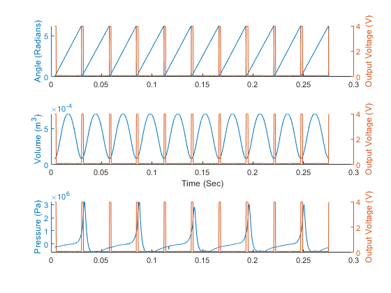 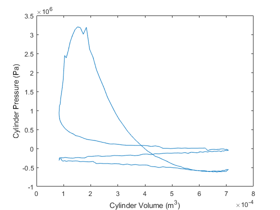 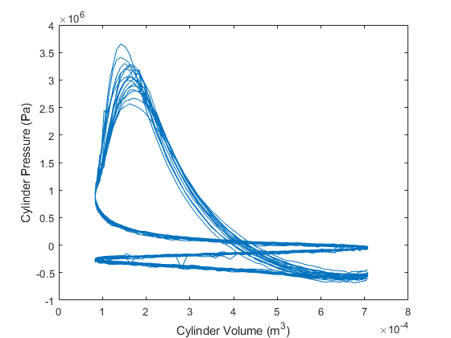
800 RPM
Power_800 = 14.9*745.7; % Watts dm_800 = (13829-13760)/1000; % kilograms RPM800P = (RPM800_Pres./vp_conv).*6894; % Pa RPM800t = zeros(1,length(RPM800P)); for i = 1:length(RPM800t) RPM800t(i) = RPM800t(i) + (i-1)*.0002; end RPM800t = RPM800t'; sw = 0; j = 1; thresh = 1; n = length(RPM800_Volt); for i = 1:n if RPM800_Volt(i) - thresh > 0 && sw == 0 sw = 1; pos_800(j) = i; j = j + 1; elseif RPM800_Volt(i) - thresh < 0 && sw == 1 sw = 0; end end theta_800 = zeros(length(RPM800_Volt)-5,1); for j = 1:length(pos_800)-1 for i = pos_800(j):pos_800(j+1) theta_800(i) = 2*pi*(1 - ((RPM800t(pos_800(j+1)) - RPM800t(i))/(RPM800t(pos_800(j+1)) - RPM800t(pos_800(j))))); end end Volume_800 = Vol_Clea.*(1+(.5.*(CR-1)).*(R+1-cos(theta_800)-sqrt(R.^2-(sin(theta_800)).^2))); % Figure for Part 1a f6=figure(6); subplot(3,1,3) hold on yyaxis left plot(RPM800t(pos_800(1):pos_800(11)),RPM800P(pos_800(1):pos_800(11))) ylabel('Pressure (Pa)') yyaxis right ylabel('Output Voltage (V)') plot(RPM800t(pos_800(1):pos_800(11)),RPM800_Volt(pos_800(1):pos_800(11))) subplot(3,1,1) hold on yyaxis left plot(RPM800t(pos_800(1):pos_800(11)),theta_800(pos_800(1):pos_800(11))) ylabel('Angle (Radians)') yyaxis right ylabel('Output Voltage (V)') plot(RPM800t(pos_800(1):pos_800(11)),RPM800_Volt(pos_800(1):pos_800(11))) subplot(3,1,2) hold on yyaxis left plot(RPM800t(pos_800(1):pos_800(11)),Volume_800(pos_800(1):pos_800(11))) ylabel('Volume (m^3)') yyaxis right ylabel('Output Voltage (V)') plot(RPM800t(pos_800(1):pos_800(11)),RPM800_Volt(pos_800(1):pos_800(11))) xlabel('Time (Sec)') % Figure for part 1b f19=figure(19); plot(Volume_800(pos_800(3):pos_800(5)),RPM800P(pos_800(3):pos_800(5))) xlabel('Cylinder Volume (m^3)') ylabel('Cylinder Pressure (Pa)') % Figure for part 1c f7=figure(7); plot(Volume_800(pos_800(3):pos_800(end)),RPM800P(pos_800(3):pos_800(end))) xlabel('Cylinder Volume (m^3)') ylabel('Cylinder Pressure (Pa)') % Part 2 j=1; W = zeros(10,1); P = zeros(10,1); for i = 1:2:19 W(j) = trapz(Volume_800(pos_800(i):pos_800(i+2)),RPM800P(pos_800(i):pos_800(i+2)))/2; P(j) = W(j)/(RPM800t(pos_800(i+2))-RPM800t(pos_800(i))); j=j+1; end Avg_W_800 = mean(W); Avg_P_800 = mean(P); MFR = (dm_800/(60/RPM800t(end)))/(length(pos_800)/2); %MFR = ((dm_800/(60/RPM800t(end)))/(length(pos_800)/2)); MFR2_800 = dm_800/60; MFR_Cyl_800 = MFR/2; % Flow rate of one cylinder per cycle KW_800 = Avg_P_800/1000; % Power in KW Torque_800 = Avg_W_800/3.16; % Engine Torque Brake_Power_800 = 2*pi*(800/60)*Torque_800; Brake_Eff_800 = Brake_Power_800/(MFR2_800*(44e6)); % Brake thermal eff Conv_Eff_800 = Brake_Power_800/(Avg_P_800*2); % Mechanical conversion eff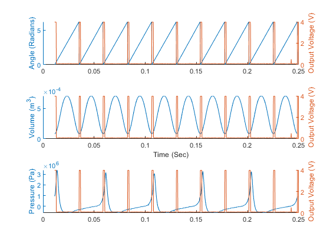 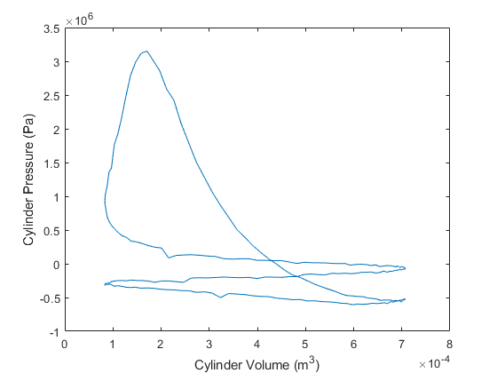 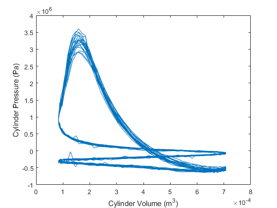
900 RPM
Power_900 = 16.6*745.7; % Watts dm_900 = (13941-13864)/1000; % kilograms RPM900P = (RPM900_Pres./vp_conv).*6894; % Pa RPM900t = zeros(1,length(RPM900P)); for i = 1:length(RPM900t) RPM900t(i) = RPM900t(i) + (i-1)*.0002; end RPM900t = RPM900t'; sw = 0; j = 1; thresh = 1; n = length(RPM900_Volt); for i = 1:n if RPM900_Volt(i) - thresh > 0 && sw == 0 sw = 1; pos_900(j) = i; j = j + 1; elseif RPM900_Volt(i) - thresh < 0 && sw == 1 sw = 0; end end theta_900 = zeros(length(RPM900_Volt)-5,1); for j = 1:length(pos_900)-1 for i = pos_900(j):pos_900(j+1) theta_900(i) = 2*pi*(1 - ((RPM900t(pos_900(j+1)) - RPM900t(i))/(RPM900t(pos_900(j+1)) - RPM900t(pos_900(j))))); end end Volume_900 = Vol_Clea.*(1+(.5.*(CR-1)).*(R+1-cos(theta_900)-sqrt(R.^2-(sin(theta_900)).^2))); % Figure for Part 1a f8=figure(8); subplot(3,1,3) hold on yyaxis left plot(RPM900t(pos_900(1):pos_900(11)),RPM900P(pos_900(1):pos_900(11))) ylabel('Pressure (V)') yyaxis right ylabel('Output Voltage (V)') plot(RPM900t(pos_900(1):pos_900(11)),RPM900_Volt(pos_900(1):pos_900(11))) subplot(3,1,1) hold on yyaxis left plot(RPM900t(pos_900(1):pos_900(11)),theta_900(pos_900(1):pos_900(11))) ylabel('Angle (Radians)') yyaxis right ylabel('Output Voltage (V)') plot(RPM900t(pos_900(1):pos_900(11)),RPM900_Volt(pos_900(1):pos_900(11))) subplot(3,1,2) hold on yyaxis left plot(RPM900t(pos_900(1):pos_900(11)),Volume_900(pos_900(1):pos_900(11))) ylabel('Volume (m^3)') yyaxis right ylabel('Output Voltage (V)') plot(RPM900t(pos_900(1):pos_900(11)),RPM900_Volt(pos_900(1):pos_900(11))) xlabel('Time (Sec)') % Figure for part 1b f20=figure(20); plot(Volume_900(pos_900(3):pos_900(5)),RPM900P(pos_900(3):pos_900(5))) xlabel('Cylinder Volume (m^3)') ylabel('Cylinder Pressure (Pa)') % Figure for part 1c f9=figure(9); plot(Volume_900(pos_900(3):pos_900(end)),RPM900P(pos_900(3):pos_900(end))) xlabel('Cylinder Volume (m^3)') ylabel('Cylinder Pressure (Pa)') % Part 2 j=1; W = zeros(10,1); P = zeros(10,1); for i = 1:2:19 W(j) = trapz(Volume_900(pos_900(i):pos_900(i+2)),RPM900P(pos_900(i):pos_900(i+2)))/2; P(j) = W(j)/(RPM900t(pos_900(i+2))-RPM900t(pos_900(i))); j=j+1; end Avg_W_900 = mean(W); Avg_P_900 = mean(P); MFR = (dm_900/(60/RPM900t(end)))/(length(pos_900)/2); %MFR = ((dm_900/(60/RPM900t(end)))/(length(pos_900)/2)); MFR2_900 = dm_900/60; MFR_Cyl_900 = MFR/2; % Flow rate of one cylinder per cycle KW_900 = Avg_P_900/1000 ;% Power in KW Torque_900 = Avg_W_900/3.16; % Engine Torque Brake_Power_900 = 2*pi*(900/60)*Torque_900; Brake_Eff_900 = Brake_Power_900/(MFR2_900*(44e6)); % Brake thermal eff Conv_Eff_900 = Brake_Power_900/(Avg_P_900*2); % Mechanical conversion eff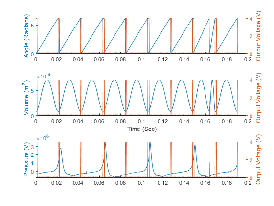 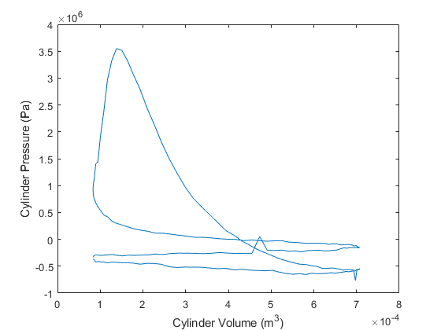 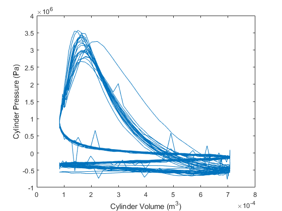
1000 RPM
Power_1000 = 17.7*745.7; % Watts dm_1000 = (14056-13976)/1000; % kilograms RPM1000P = (RPM1000_Pres./vp_conv).*6894; % Pa RPM1000t = zeros(1,length(RPM1000P)); for i = 1:length(RPM1000t) RPM1000t(i) = RPM1000t(i) + (i-1)*.0002; end RPM1000t = RPM1000t'; sw = 0; j = 1; thresh = 1; n = length(RPM1000_Volt); for i = 1:n if RPM1000_Volt(i) - thresh > 0 && sw == 0 sw = 1; pos_1000(j) = i; j = j + 1; elseif RPM1000_Volt(i) - thresh < 0 && sw == 1 sw = 0; end end theta_1000 = zeros(length(RPM1000_Volt)-5,1); for j = 1:length(pos_1000)-1 for i = pos_1000(j):pos_1000(j+1) theta_1000(i) = 2*pi*(1 - ((RPM1000t(pos_1000(j+1)) - RPM1000t(i))/(RPM1000t(pos_1000(j+1)) - RPM1000t(pos_1000(j))))); end end Volume_1000 = Vol_Clea.*(1+(.5.*(CR-1)).*(R+1-cos(theta_1000)-sqrt(R.^2-(sin(theta_1000)).^2))); % Figure for Part 1a f10=figure(10); subplot(3,1,3) hold on yyaxis left plot(RPM1000t(pos_1000(1):pos_1000(11)),RPM1000P(pos_1000(1):pos_1000(11))) ylabel('Pressure (Pa)') yyaxis right ylabel('Output Voltage (V)') plot(RPM1000t(pos_1000(1):pos_1000(11)),RPM1000_Volt(pos_1000(1):pos_1000(11))) subplot(3,1,1) hold on yyaxis left plot(RPM1000t(pos_1000(1):pos_1000(11)),theta_1000(pos_1000(1):pos_1000(11))) ylabel('Angle (Radians)') yyaxis right ylabel('Output Voltage (V)') plot(RPM1000t(pos_1000(1):pos_1000(11)),RPM1000_Volt(pos_1000(1):pos_1000(11))) subplot(3,1,2) hold on yyaxis left plot(RPM1000t(pos_1000(1):pos_1000(11)),Volume_1000(pos_1000(1):pos_1000(11))) ylabel('Volume (m^3)') yyaxis right ylabel('Output Voltage (V)') plot(RPM1000t(pos_1000(1):pos_1000(11)),RPM1000_Volt(pos_1000(1):pos_1000(11))) xlabel('Time (Sec)') % Figure for part 1b f21=figure(21); plot(Volume_1000(pos_1000(3):pos_1000(5)),RPM1000P(pos_1000(3):pos_1000(5))) xlabel('Cylinder Volume (m^3)') ylabel('Cylinder Pressure (Pa)') % Figure for part 1c f11=figure(11); plot(Volume_1000(pos_1000(3):pos_1000(end)),RPM1000P(pos_1000(3):pos_1000(end))) xlabel('Cylinder Volume (m^3)') ylabel('Cylinder Pressure (Pa)') % Part 2 j=1; W = zeros(10,1); P = zeros(10,1); for i = 1:2:19 W(j) = trapz(Volume_1000(pos_1000(i):pos_1000(i+2)),RPM1000P(pos_1000(i):pos_1000(i+2)))/2; P(j) = W(j)/(RPM1000t(pos_1000(i+2))-RPM1000t(pos_1000(i))); j=j+1; end Avg_W_1000 = mean(W); Avg_P_1000 = mean(P); MFR = (dm_1000/(60/RPM1000t(end)))/(length(pos_1000)/2); %MFR = ((dm_1000/(60/RPM1000t(end)))/(length(pos_1000)/2)); MFR2_1000 = dm_1000/60; MFR_Cyl_1000 = MFR/2; % Flow rate of one cylinder per cycle KW_1000 = Avg_P_1000/1000; % Power in KW Torque_1000 = Avg_W_1000/3.16; % Engine Torque Brake_Power_1000 = 2*pi*(1000/60)*Torque_1000; Brake_Eff_1000 = Brake_Power_1000/(MFR2_1000*(44e6)); % Brake thermal eff Conv_Eff_1000 = Brake_Power_1000/(Avg_P_1000*2); % Mechanical conversion eff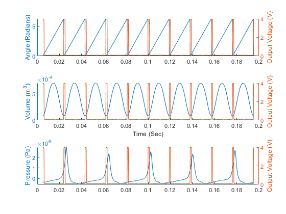
 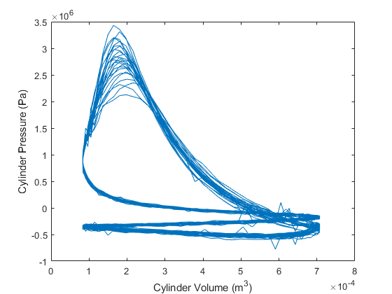
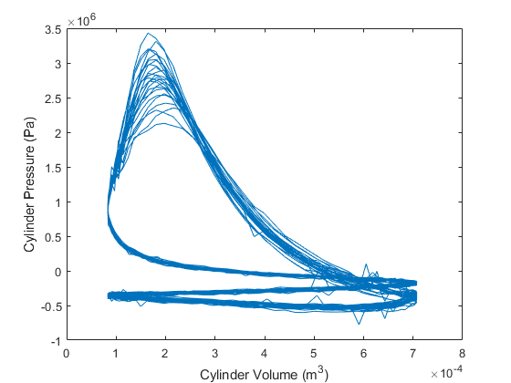 1100 RPM
Power_1100 = 12*745.7; % Watts dm_1100 = (14156-14097)/1000; % kilograms RPM1100P = (RPM1100_Pres./vp_conv).*6894; % Pa RPM1100t = zeros(1,length(RPM1100P)); for i = 1:length(RPM1100t) RPM1100t(i) = RPM1100t(i) + (i-1)*.0002; end RPM1100t = RPM1100t'; sw = 0; j = 1; thresh = 1; n = length(RPM1100_Volt); for i = 1:n if RPM1100_Volt(i) - thresh > 0 && sw == 0 sw = 1; pos_1100(j) = i; j = j + 1; elseif RPM1100_Volt(i) - thresh < 0 && sw == 1 sw = 0; end end theta_1100 = zeros(length(RPM1100_Volt)-5,1); for j = 1:length(pos_1100)-1 for i = pos_1100(j):pos_1100(j+1) theta_1100(i) = 2*pi*(1 - ((RPM1100t(pos_1100(j+1)) - RPM1100t(i))/(RPM1100t(pos_1100(j+1)) - RPM1100t(pos_1100(j))))); end end Volume_1100 = Vol_Clea.*(1+(.5.*(CR-1)).*(R+1-cos(theta_1100)-sqrt(R.^2-(sin(theta_1100)).^2))); % Figure for Part 1a f12=figure(12); subplot(3,1,3) hold on yyaxis left plot(RPM1100t(pos_1100(1):pos_1100(11)),RPM1100P(pos_1100(1):pos_1100(11))) ylabel('Pressure (Pa)') yyaxis right ylabel('Output Voltage (V)') plot(RPM1100t(pos_1100(1):pos_1100(11)),RPM1100_Volt(pos_1100(1):pos_1100(11))) subplot(3,1,1) hold on yyaxis left plot(RPM1100t(pos_1100(1):pos_1100(11)),theta_1100(pos_1100(1):pos_1100(11))) ylabel('Angle (Radians)') yyaxis right ylabel('Output Voltage (V)') plot(RPM1100t(pos_1100(1):pos_1100(11)),RPM1100_Volt(pos_1100(1):pos_1100(11))) subplot(3,1,2) hold on yyaxis left plot(RPM1100t(pos_1100(1):pos_1100(11)),Volume_1100(pos_1100(1):pos_1100(11))) ylabel('Volume (m^3)') yyaxis right ylabel('Output Voltage (V)') plot(RPM1100t(pos_1100(1):pos_1100(11)),RPM1100_Volt(pos_1100(1):pos_1100(11))) xlabel('Time (Sec)') % Figure for part 1b f22=figure(22); plot(Volume_1100(pos_1100(3):pos_1100(5)),RPM1100P(pos_1100(3):pos_1100(5))) xlabel('Cylinder Volume (m^3)') ylabel('Cylinder Pressure (Pa)') % Figure for part 1c f13=figure(13); plot(Volume_1100(pos_1100(3):pos_1100(end)),RPM1100P(pos_1100(3):pos_1100(end))) xlabel('Cylinder Volume (m^3)') ylabel('Cylinder Pressure (Pa)') % Part 2 j=1; W = zeros(10,1); P = zeros(10,1); for i = 1:2:19 W(j) = trapz(Volume_1100(pos_1100(i):pos_1100(i+2)),RPM1100P(pos_1100(i):pos_1100(i+2)))/2; P(j) = W(j)/(RPM1100t(pos_1100(i+2))-RPM1100t(pos_1100(i))); j=j+1; end Avg_W_1100 = mean(W); Avg_P_1100 = mean(P); MFR = (dm_1100/(60/RPM1100t(end)))/(length(pos_1100)/2); %MFR = ((dm_1100/(60/RPM1100t(end)))/(length(pos_1100)/2)); MFR2_1100 = dm_1100/60; MFR_Cyl_1100 = MFR/2; % Flow rate of one cylinder per cycle KW_1100 = Avg_P_1100/1000; % Power in KW Torque_1100 = Avg_W_1100/3.16; % Engine Torque Brake_Power_1100 = 2*pi*(1100/60)*Torque_1100; Brake_Eff_1100 = Brake_Power_1100/(MFR2_600*(44e6)); % Brake thermal eff Conv_Eff_1100 = Brake_Power_1100/(Avg_P_1100*2); % Mechanical conversion eff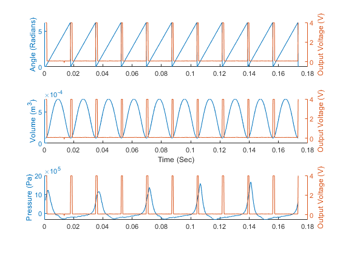 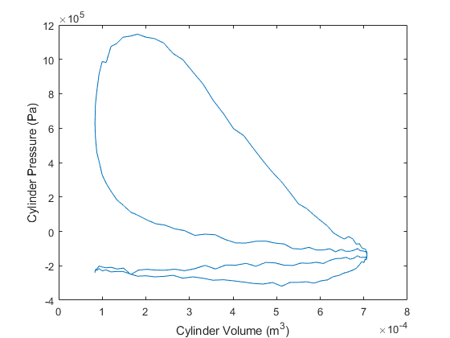 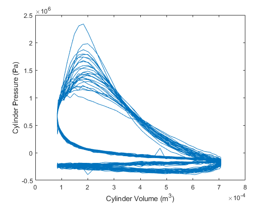
Final Calculations and Tables
Work = [Avg_W_600;Avg_W_700;Avg_W_800;Avg_W_900;Avg_W_1000;Avg_W_1100]; Power = [Avg_P_600;Avg_P_700;Avg_P_800;Avg_P_900;Avg_P_1000;Avg_P_1100]; Std_Work = std(Work); Std_Power = std(Power); RPM = ["600";"700";"800";"900";"1000";"1100";"Standard Deviation"]; % rotations per minute Work = [Avg_W_600;Avg_W_700;Avg_W_800;Avg_W_900;Avg_W_1000;Avg_W_1100;Std_Work]; Power = [Avg_P_600;Avg_P_700;Avg_P_800;Avg_P_900;Avg_P_1000;Avg_P_1100;Std_Power]; T1 = table(RPM,Work,Power); RPM = ["600";"700";"800";"900";"1000";"1100"]; % rotations per minute MFR = [MFR_Cyl_600;MFR_Cyl_700;MFR_Cyl_800;MFR_Cyl_900;MFR_Cyl_1000;MFR_Cyl_1100]; % Mass flow rate kg/s Power = [KW_600;KW_700;KW_800;KW_900;KW_1000;KW_1100]; % power in KW Torque = [Torque_600;Torque_700;Torque_800;Torque_900;Torque_1000;Torque_1100]; % N-m Brake_Efficiency = [Brake_Eff_600;Brake_Eff_700;Brake_Eff_800;Brake_Eff_900;Brake_Eff_1000;Brake_Eff_1100]; Conversion_Efficieny = [Conv_Eff_600;Conv_Eff_700;Conv_Eff_800;Conv_Eff_900;Conv_Eff_1000;Conv_Eff_1100]; T2 = table(RPM,MFR,Power,Torque,Brake_Efficiency,Conversion_Efficieny);
Plotting End Results
Work = [Avg_W_600;Avg_W_700;Avg_W_800;Avg_W_900;Avg_W_1000;Avg_W_1100]; RPM = [600;700;800;900;1000;1100]; % rotations per minute BrakeTorque = 2*pi.*Work; Torque = [Torque_600,Torque_700,Torque_800,Torque_900,Torque_1000,Torque_1100]; for i = 1:length(Torque) BrakePower(i) = 2*pi.*(RPM(i)/60).*Torque(i); end f14=figure(14); yyaxis left plot(RPM,BrakeTorque,'-o') ylabel('Brake Torque (J)') hold on yyaxis right plot(RPM,BrakePower,'-s') ylabel('Brake Power (J/s)') xlabel('Rotations Per Minute') text(650,11000,'Maximum Brake Torque = 2113 J') text(650,10500,'Maximum Brake Power = 11,150 J/s') f15=figure(15); plot(RPM,Brake_Efficiency,'-o') xlabel('Rotations Per Minute') ylabel('Brake Efficiency ( )') f16 = figure(16); plot(RPM,MFR,'-o') xlabel('Rotations Per Minute') ylabel('Mass Flow Rate (kg/Cycle/Cylinder)') MFR2 = [MFR2_600,MFR2_700,MFR2_800,MFR2_900,MFR2_1000,MFR2_1100]; f17 = figure(17); plot(RPM,MFR2,'-o') xlabel('Rotations Per Minute') ylabel('Mass Flow Rate (kg/s)')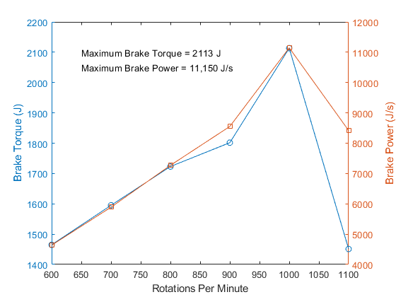 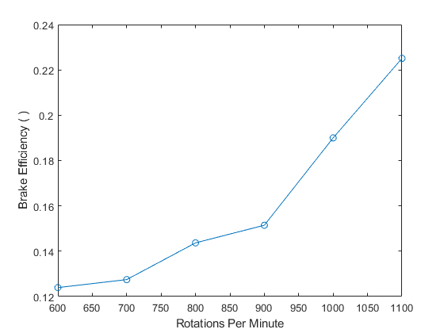 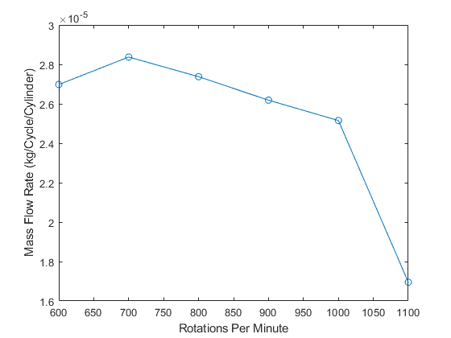 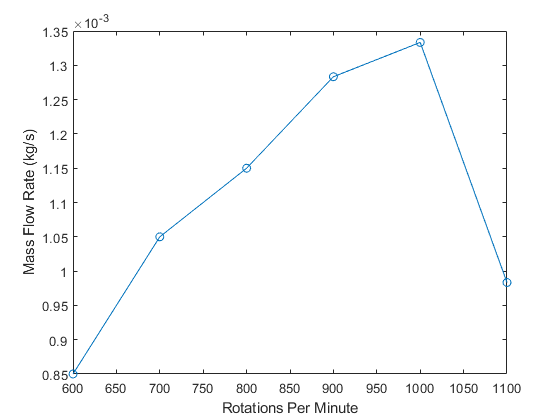
Saving Figures
saveas(f1, 'C:\Users\User\Desktop\Charlie\Classes\Junior Year\Spring 2019\J-Lab\Lab 5\Figures\subplot600.png','png'); saveas(f2, 'C:\Users\User\Desktop\Charlie\Classes\Junior Year\Spring 2019\J-Lab\Lab 5\Figures\onecycle600.png','png'); saveas(f3, 'C:\Users\User\Desktop\Charlie\Classes\Junior Year\Spring 2019\J-Lab\Lab 5\Figures\allcycle600.png','png'); saveas(f4, 'C:\Users\User\Desktop\Charlie\Classes\Junior Year\Spring 2019\J-Lab\Lab 5\Figures\subplot700.png','png'); saveas(f5, 'C:\Users\User\Desktop\Charlie\Classes\Junior Year\Spring 2019\J-Lab\Lab 5\Figures\allcycle700.png','png'); saveas(f6, 'C:\Users\User\Desktop\Charlie\Classes\Junior Year\Spring 2019\J-Lab\Lab 5\Figures\subplot800.png','png'); saveas(f7, 'C:\Users\User\Desktop\Charlie\Classes\Junior Year\Spring 2019\J-Lab\Lab 5\Figures\allcycle800.png','png'); saveas(f8, 'C:\Users\User\Desktop\Charlie\Classes\Junior Year\Spring 2019\J-Lab\Lab 5\Figures\subplot900.png','png'); saveas(f9, 'C:\Users\User\Desktop\Charlie\Classes\Junior Year\Spring 2019\J-Lab\Lab 5\Figures\allcycle900.png','png'); saveas(f10, 'C:\Users\User\Desktop\Charlie\Classes\Junior Year\Spring 2019\J-Lab\Lab 5\Figures\subplot1000.png','png'); saveas(f11, 'C:\Users\User\Desktop\Charlie\Classes\Junior Year\Spring 2019\J-Lab\Lab 5\Figures\allcycle1000.png','png'); saveas(f12, 'C:\Users\User\Desktop\Charlie\Classes\Junior Year\Spring 2019\J-Lab\Lab 5\Figures\subplot1100.png','png'); saveas(f13, 'C:\Users\User\Desktop\Charlie\Classes\Junior Year\Spring 2019\J-Lab\Lab 5\Figures\allcycle1100.png','png'); saveas(f14, 'C:\Users\User\Desktop\Charlie\Classes\Junior Year\Spring 2019\J-Lab\Lab 5\Figures\braketorquepower.png','png'); saveas(f15, 'C:\Users\User\Desktop\Charlie\Classes\Junior Year\Spring 2019\J-Lab\Lab 5\Figures\thermaleff.png','png'); saveas(f16, 'C:\Users\User\Desktop\Charlie\Classes\Junior Year\Spring 2019\J-Lab\Lab 5\Figures\mfr.png','png'); saveas(f17, 'C:\Users\User\Desktop\Charlie\Classes\Junior Year\Spring 2019\J-Lab\Lab 5\Figures\mfgkgs.png','png'); saveas(f18, 'C:\Users\User\Desktop\Charlie\Classes\Junior Year\Spring 2019\J-Lab\Lab 5\Figures\onecycle700.png','png'); saveas(f19, 'C:\Users\User\Desktop\Charlie\Classes\Junior Year\Spring 2019\J-Lab\Lab 5\Figures\onecycle800.png','png'); saveas(f20, 'C:\Users\User\Desktop\Charlie\Classes\Junior Year\Spring 2019\J-Lab\Lab 5\Figures\onecycle900.png','png'); saveas(f21, 'C:\Users\User\Desktop\Charlie\Classes\Junior Year\Spring 2019\J-Lab\Lab 5\Figures\onecycle1000.png','png'); saveas(f22, 'C:\Users\User\Desktop\Charlie\Classes\Junior Year\Spring 2019\J-Lab\Lab 5\Figures\onecycle1100.png','png');
 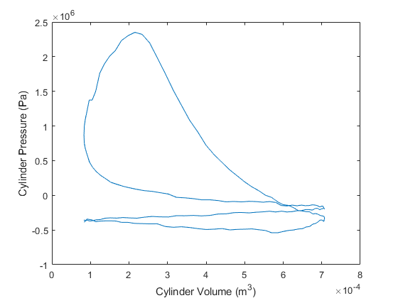
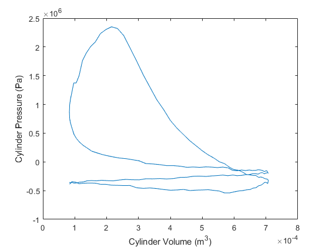